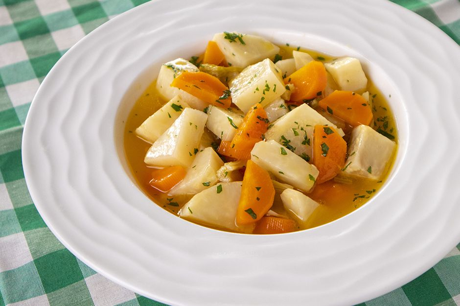

Zeytin Yağlı Kereviz
Kaç Kişilik
6 Kişilik
Hazırlama Süresi
15 Dakika
Pişirme Süresi
30 Dakika
Malzeme Listesi
- 1/2 çay bardağı zeytinyağı
- 2 adet orta boy havuç
- 2 adet kereviz (büyük boy)
- 2 çay bardağı portakal suyu
- 1 bardak su
- 1 tatlı kaşığı toz şeker
- 1 tatlı kaşığı tuz
Yapılışı
Kerevizleri soyun. Varsa yapraklarını ve saplarını bir kenara ayırın. Soyduğunuz kerevizleri küp küp doğrayın. Kararmaması için limonlu suda bekletin. Havuçları da soyun ve yarım ay şeklinde doğrayın. Ayırdığınız kereviz saplarını ve yapraklarını yıkayın ve minik minik doğrayın. Zeytinyağın yarısını geniş tabanlı bir tencerede ısıtın.Doğradığınız havuçları 2-3 dakika kadar soteleyin. Kerevizleri de ekleyerek 1-2 dakika daha sotelemeye devam edin. Kaynadıktan sonra kısık-orta ateşte kerevizler yumuşayınca dek tencerenin kapağı kapalı olacak şekilde zeytinyağın diğer yarısını ekledikten sonra pişmeye bırakın. Yaklaşık 30-35 dakika kadar sonra piştiğinde bıçağın ucuyla kerevizlerin pişip pişmediğini kontrol edin. Piştiyse ocaktan alın. Dilerseniz ılık, dilerseniz oda sıcaklığında dinlendikten sonra servis edin.
Kerevizleri soyun. Varsa yapraklarını ve saplarını bir kenara ayırın. Soyduğunuz kerevizleri küp küp doğrayın. Kararmaması için limonlu suda bekletin. Havuçları da soyun ve yarım ay şeklinde doğrayın. Ayırdığınız kereviz saplarını ve yapraklarını yıkayın ve minik minik doğrayın. Zeytinyağın yarısını geniş tabanlı bir tencerede ısıtın.Doğradığınız havuçları 2-3 dakika kadar soteleyin. Kerevizleri de ekleyerek 1-2 dakika daha sotelemeye devam edin. Kaynadıktan sonra kısık-orta ateşte kerevizler yumuşayınca dek tencerenin kapağı kapalı olacak şekilde zeytinyağın diğer yarısını ekledikten sonra pişmeye bırakın. Yaklaşık 30-35 dakika kadar sonra piştiğinde bıçağın ucuyla kerevizlerin pişip pişmediğini kontrol edin. Piştiyse ocaktan alın. Dilerseniz ılık, dilerseniz oda sıcaklığında dinlendikten sonra servis edin.